Case study: client work via Deloitte USI
M-Corp
Redesigning a vacation-ownership booking experience for a Fortune 500 RFP
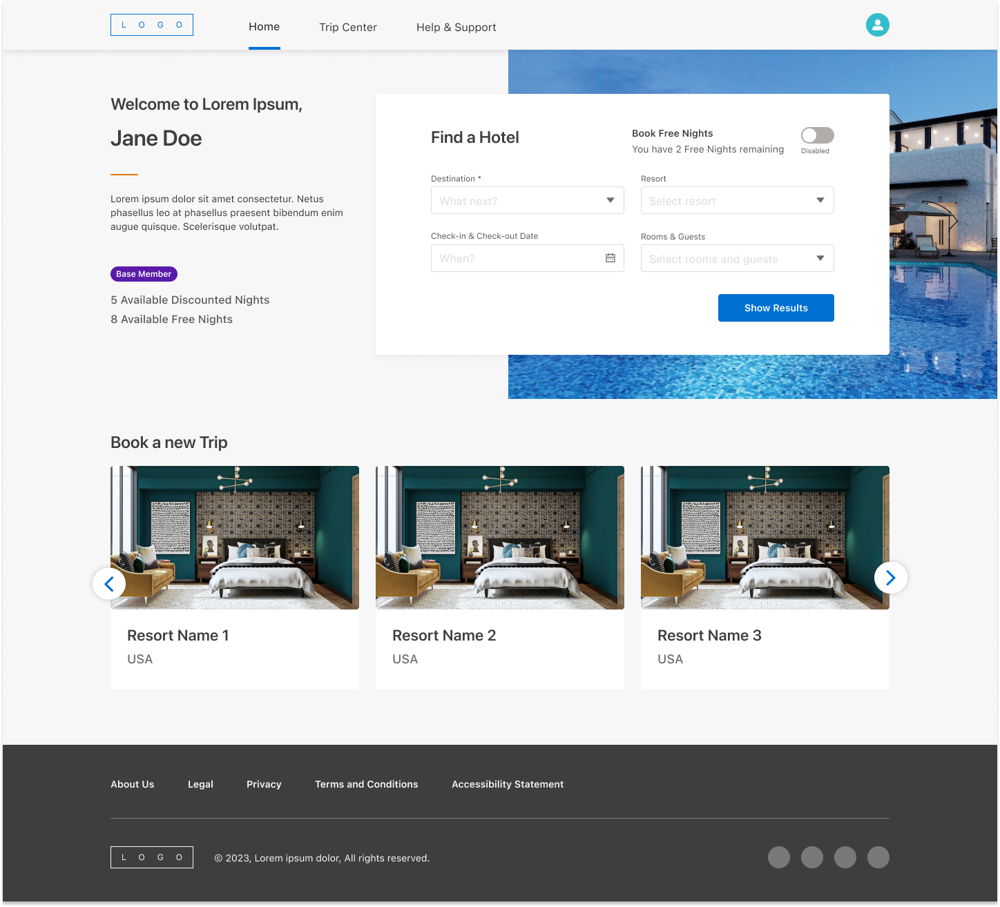
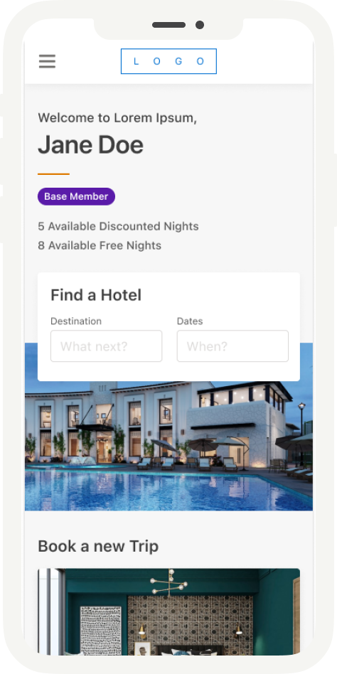
Project Goal & Scope
M-Corp needed a member-facing app for existing owners to actually use the benefits they already held: searching for and booking stays with free nights and discounted-night entitlements, tracking upcoming and past trips, and managing their profile and membership details.
This wasn't a purchase or ownership-management experience. The scope was entirely about day-to-day use of benefits members already had, in an app comparable to what M-Corp's parent group's flagship loyalty app offers its own members. What made it different was the underlying benefit structure, a legally mandated cancellation window, and a parallel loyalty identity in the group's separate hotel program.
I took stories from the Design Lead, researched how competitors and adjacent products handled the same problems (Marriott Bonvoy, Airbnb, Hilton, Booking.com, and Agoda), and designed the desktop and mobile experience across every flow in the product.
Task 1Access & Onboarding
Problems
A new member's password had to satisfy three conditions at once: 8 characters, 1 letter, 1 number. That sat against a non-editable, pre-populated email pulled directly from their welcome link.
On sign-in, existing members could hit one of two distinct error states. An invalid email format was called out directly and specifically. Incorrect credentials returned one deliberately generic message.
From that state, a member had two separate ways forward: head into Forgot Password, or click "Need Help?" to reach support directly.
Approach
For both the initial Set Password screen and the password-reset step inside Forgot Password, I surfaced all three password requirements together up front instead of revealing them one at a time after a failed attempt.
Keeping "Need Help?" visible alongside Forgot Password, instead of funneling every failed sign-in through one recovery flow, meant a member who couldn't complete that flow on their own still had a direct route to a person, not just a dead end.
Design decision
Two decisions did most of the work in this flow.
Showing all three password requirements together, before a member starts typing, was the first. The more common pattern validates field by field and only surfaces each rule after a failed attempt, which turns password creation into a guessing game. Putting the finish line in view from the start removes most of that friction in one move.
The second was giving the credentials-error state two distinct exits instead of one. Forgot Password handles the most common case, but not every member gets there easily on their own. Leaving "Need Help?" in place alongside it kept the recovery path itself accessible, not just present.
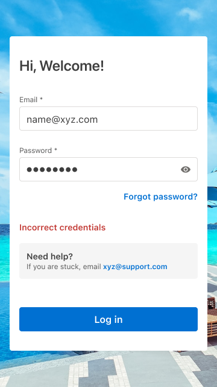
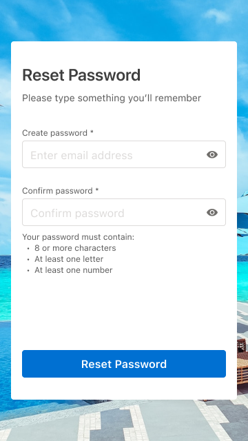
Task 2Search & Discovery
Problems
A standard hotel-search pattern (pick a destination, pick dates, see results) didn't hold up once membership type entered the picture. Different membership types had different eligibility for which resorts and destinations they could see and book, some with additional restrictions like a maximum night cap.
Every member also had a legally mandated rescission period restricting which dates they could actually book, plus a separate "Book Free Nights" flow for members with unused free-night allowances, which needed to hide the standard date and room fields entirely.
Search itself had to handle real-world messiness gracefully: a destination entered with no resort chosen, a resort with zero availability, a search returning nothing at all.
Approach
I mapped every combination of membership type against every search state before touching layout: which destinations a member could see, which fields should disable or hide, which calendar dates should grey out.
Rather than build parallel search flows per membership type, I designed one adaptive search component that reads a member's status and adjusts itself: the "Book Free Nights" toggle simply doesn't render for members who don't qualify for it, the resort dropdown filters itself to eligible properties only, and the date picker greys out both the rescission window and anything past the booking-window limit.
The same logic carried through to results. Instead of dead ends, every empty state redirected the member somewhere useful, with copy like "There is no availability in [Destination] for your selected dates. Check out these other popular resorts," paired with an actual alternate list rather than a blank page.
Design decision
The easy version of this would have let a member search freely and then shown an error after the fact. I decided against that. Ineligible destinations and resorts are filtered out of the dropdowns before a member can select them, and restricted dates are greyed out rather than selectable-then-rejected. The system does the work of enforcing eligibility invisibly, instead of making a member feel like they made a mistake by choosing something they were never going to be able to book.
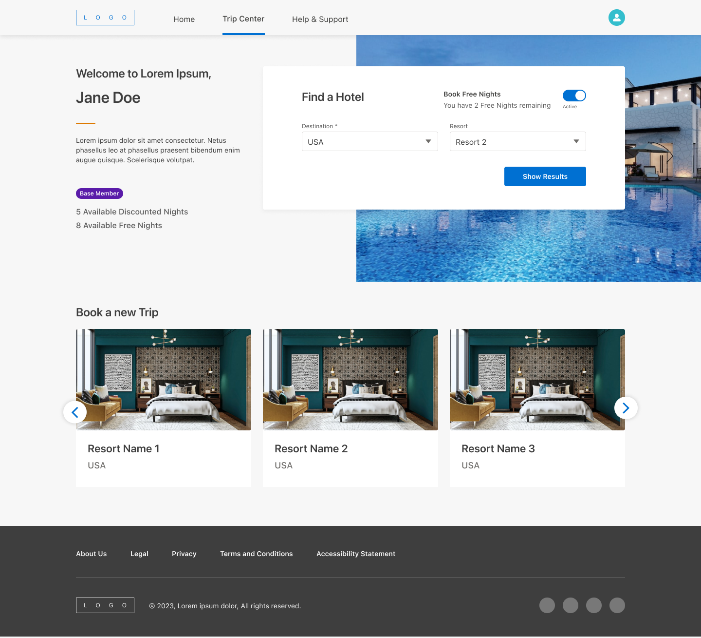
Task 3Booking
Problems
A single Booking Review page had to represent several different pricing realities depending on a member's specific benefits and eligibility at the time of booking: rack rate, discounted member nights, or free nights, each needing its own combination of struck-through pricing and remaining-balance messaging.
Layered on top of that, a member booking for a family or group could select multiple rooms across different room types, and each individual room needed its own guest count and, where relevant, its own accessibility configuration, with options like "Mobility accessible room with roll-in shower," "with tub," or "with roll-in jacuzzi."
Cancellations added their own complexity: refunding a trip meant returning nights to the correct balance, since different night-types were tracked as separate currencies rather than one shared total.
Approach
Rather than build several separate booking-review layouts, I designed one Total Cost component that reads a member's specific booking context and renders the right combination of struck-through rack rate, discounted total, and remaining-nights messaging.
I designed and pushed for the per-room accessibility selection specifically, letting a member specify exact accessibility needs for each individual room rather than leaving one blanket note on the whole reservation.
For cancellations, I mapped out exactly which night-type gets refunded where, so the interface matched what was actually happening to a member's balance behind the scenes, tying into the real handoff with the parent group's reservation systems rather than just flipping a status flag on the front end.
Design decision
The accessibility feature was a deliberate call, not a nice-to-have. Without it, a family traveling with a child who needs a roll-in shower in one room, with no special requirements in another, would've had to call the resort directly to sort it out room by room.
Building that specificity into the booking flow itself meant the request was already on record before check-in. No follow-up call, no relying on a front-desk agent to relay it correctly. A small feature, but one that changes who the product actually works for.
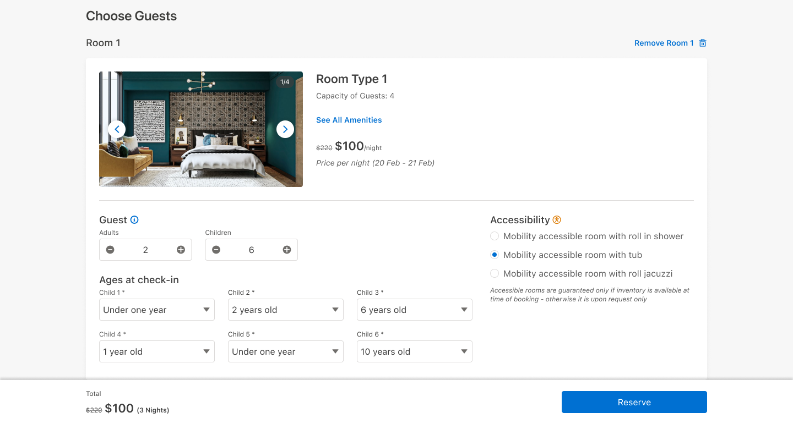
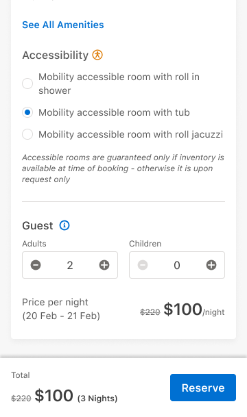
Task 4Member Profile & Trips
Problems
Profile edits came with a real risk that's easy to overlook: letting a member change their email or password without proper verification is a security hole, while making that verification too heavy turns a two-second edit into a chore.
Approach
For email changes specifically, I built an inline verification step (a confirmation link sent to the new address) before the change actually takes effect, rather than saving immediately and hoping the member typed it correctly.
Design decision
Requiring verification before an email change takes effect, rather than after, added friction to a rarely used feature. In exchange, a mistyped or malicious change can't lock a member out of their own account.
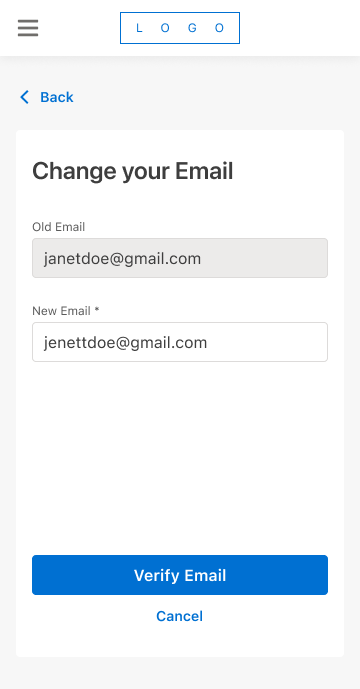
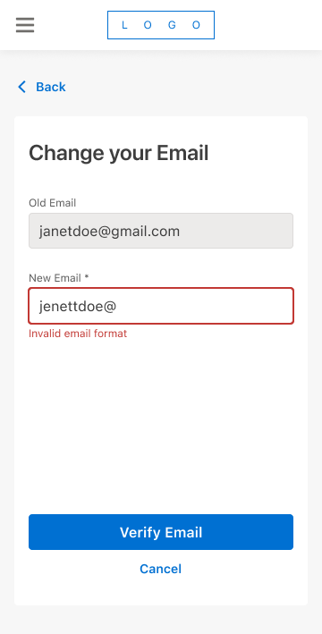
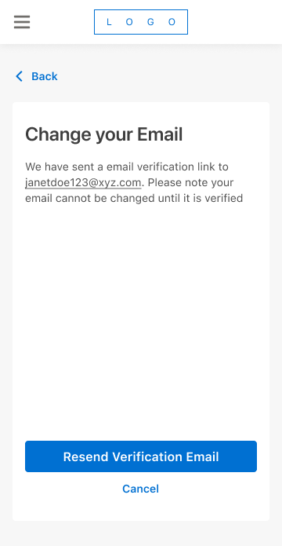
Task 5System-Wide & Supporting
Problems
The parts of a product that don't map to a single user flow (error states, loading states, membership info, automated emails) are exactly the parts most likely to feel bolted-on if every screen invents its own version.
My Membership was a specific case of this. Different membership types carried meaningfully different sets of information: some needed a full benefits breakdown including discount nights, free nights, and an anniversary date, while others needed a much smaller, simpler view entirely. Forcing every membership type into one identical template would have meant a lot of conditionally hidden fields for no real benefit to the member.
Approach
I designed one shared skeleton-loading pattern and one error-page template, reused everywhere in the app rather than reinvented per screen.
For automated communications, I built a single branded email shell (header, footer, image treatment) with a swappable body. A booking confirmation and an AI-generated content email came from completely different systems, but they needed to look like they came from the same product.
For My Membership, rather than cramming every membership type into one template, I split the page by what each type actually needed to see. Simpler membership types got their own lighter view, instead of a page full of fields that didn't apply to them.
The page also had to reconcile two identities at once: a member's M-Corp entitlements, and their standing in their parent group's separate hotel loyalty program, both visible on the same screen. Those two systems didn't update on the same schedule, so rather than presenting that loyalty status as live data, I added a plain disclaimer noting it refreshes weekly and pointed members to their loyalty account directly for anything more current.
Design decision
The email template work is worth calling out on its own. This was early 2023, and we were already designing the branded shell for AI-generated content emails, building the container before the content-generation system was fully in place. A good example of designing ahead of the immediate ask rather than only for the ticket in front of you.
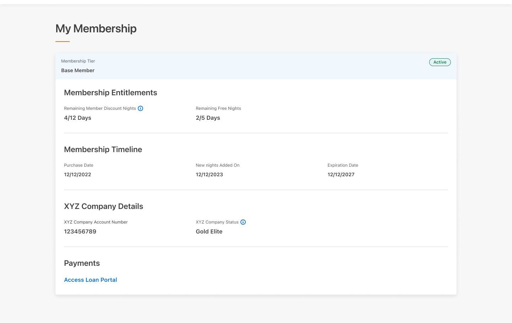
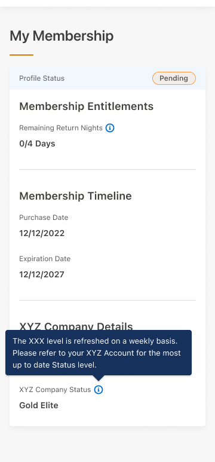
Impact
We were the runner-up. The contract went to another consultancy on budget. The client told us as much directly.
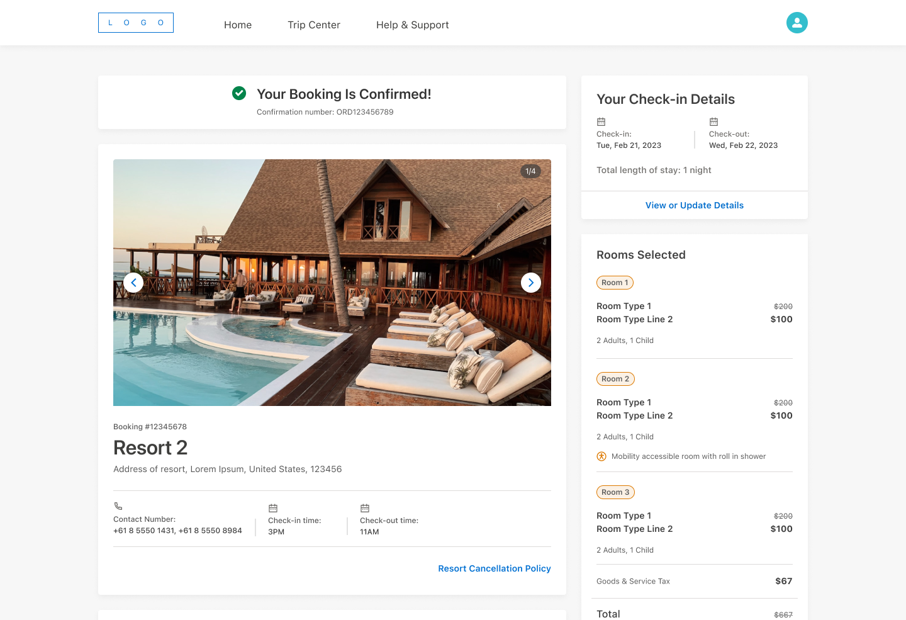
As We Conclude
This project was as much about designing for constraint as it was about designing screens. Membership tiers, a legally mandated rescission window, and two loyalty identities running side by side meant almost nothing in this app could be a single, static flow. Everything had to adapt to who was actually using it. That systems thinking, more than any individual screen, is what I'd point to as the throughline of this work.